Mechanical Engineer | Mechanical Design & CAE
FEA, SolidWorks, ANSYS, optimization, automation, and robotics
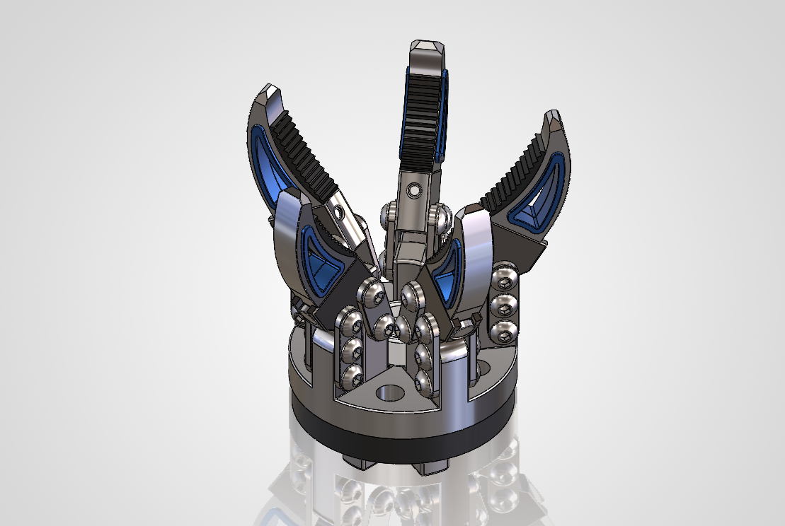
This project focused on the structural optimization of a robotic gripper finger using static and fatigue finite element analysis. The baseline geometry was evaluated under a 300 N load, and the highest stress concentration was identified at the inner load-path root region. A second design iteration introduced local slot-corner relief fillets and increased the critical root fillet radius to smooth the stress flow. Compared with the baseline, the final design reduced peak von Mises stress by 13.5%, equivalent elastic strain by 13.9%, and total deformation by 3.2%. Fatigue analysis under zero-based cyclic loading (0–300 N) showed that both designs remained in the high-cycle regime, but the optimized version improved the minimum fatigue safety factor by 15.7%. The study shows how small local geometry refinements can improve structural response without changing the overall load case.
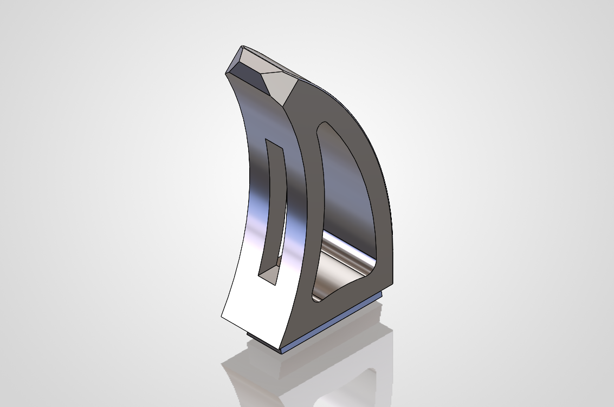
V1 Baseline
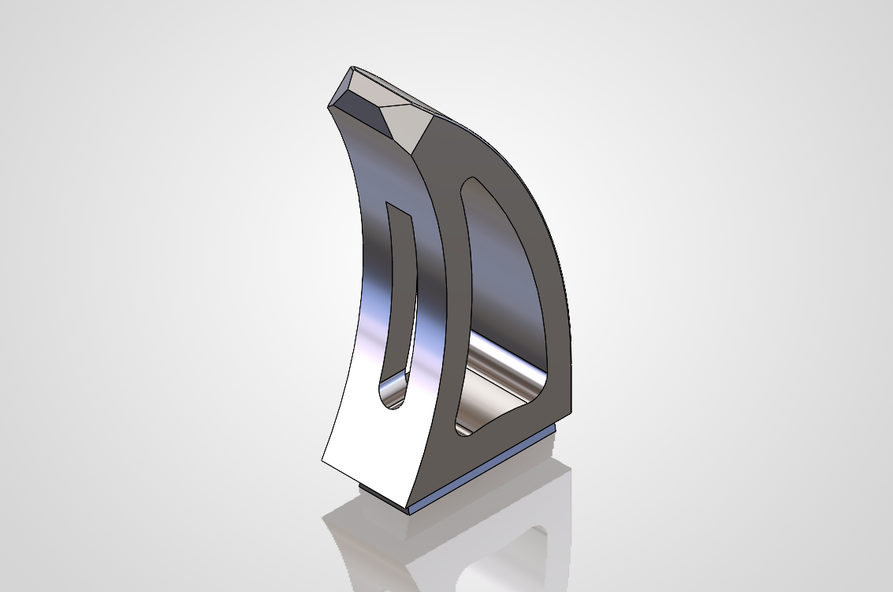
V2 Final Iteration
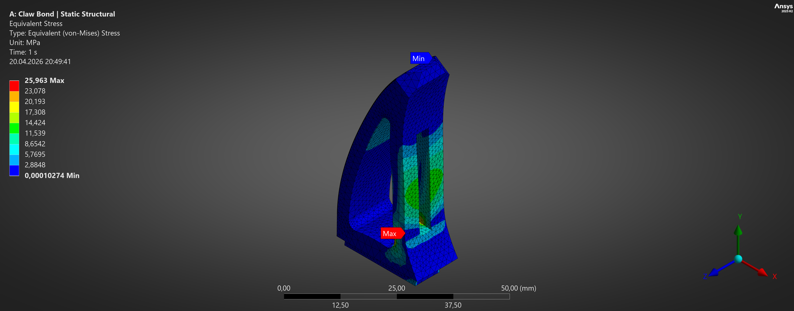
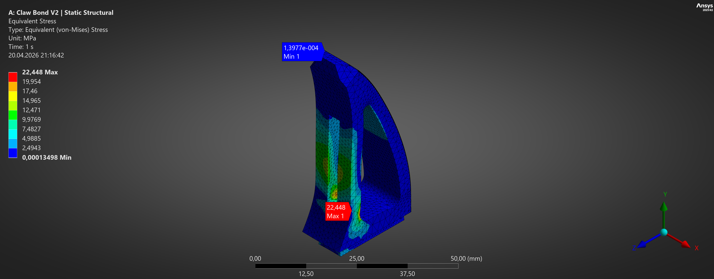
Tools: SolidWorks, ANSYS Mechanical
The aim of the study was to reduce stress concentration in the critical root region of the gripper finger, lower elastic strain, and improve fatigue behaviour under the same loading and boundary conditions. The focus was not on changing the global form of the part, but on refining a few local geometric transitions along the load path.
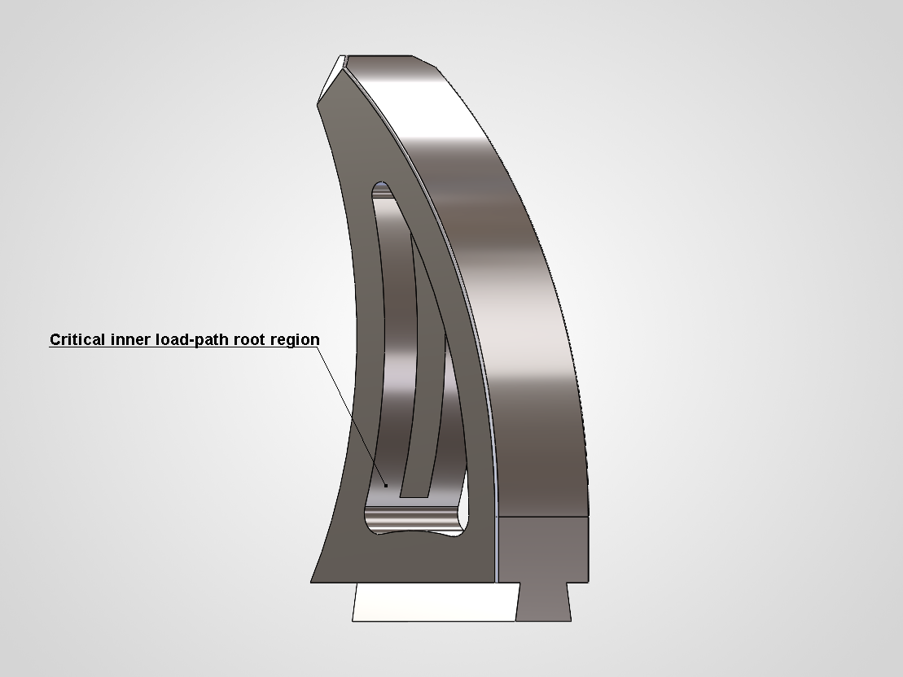
The study focused on the primary load-bearing finger body. Mating components were not fully reworked in this iteration, since the scope of the study was limited to comparative structural and fatigue response of the main part under identical boundary conditions.
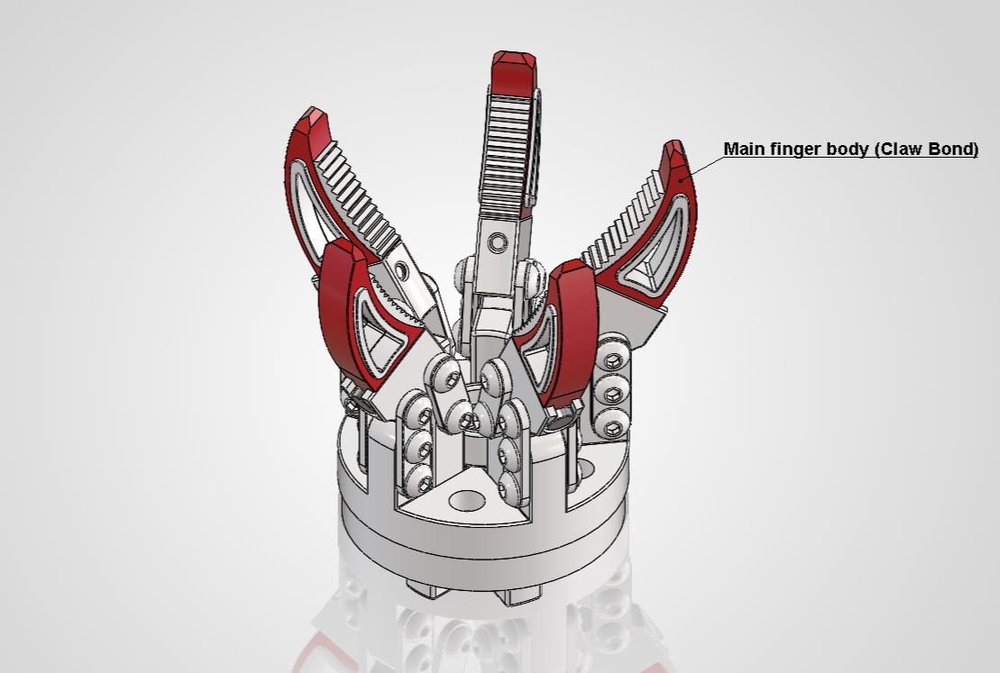
The part material was defined as Aluminum 6061-T6. Structural performance was evaluated in ANSYS using both Static Structural and Stress-Life Fatigue analysis. A 300 N load case was applied to the finger, and fatigue was assessed using zero-based cyclic loading (0 → 300 N → 0) with Goodman mean stress correction and Equivalent (von-Mises) stress as the fatigue stress component.
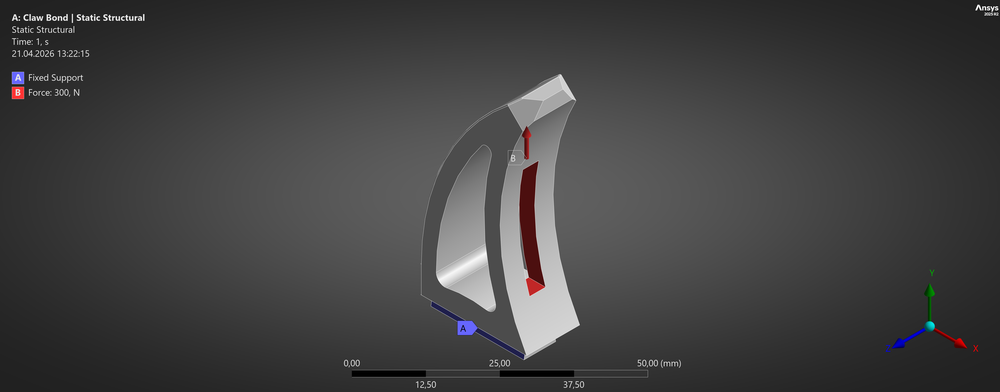
V1 – Baseline
The first version was the original finger geometry.
V2 – Final Iteration
Two local geometry refinements were introduced in the final version: R2.0 mm fillets were added to the two lower slot corners. The critical inner root fillet was increased from approximately R2.03 mm to R2.5 mm. These modifications were selected to smooth the local load path, reduce abrupt stress transitions, and relieve the hotspot identified in the baseline analysis.
V1 Baseline
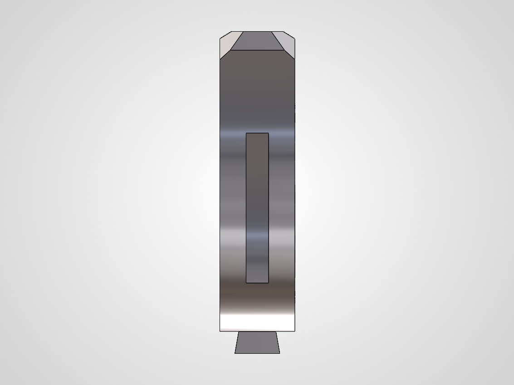
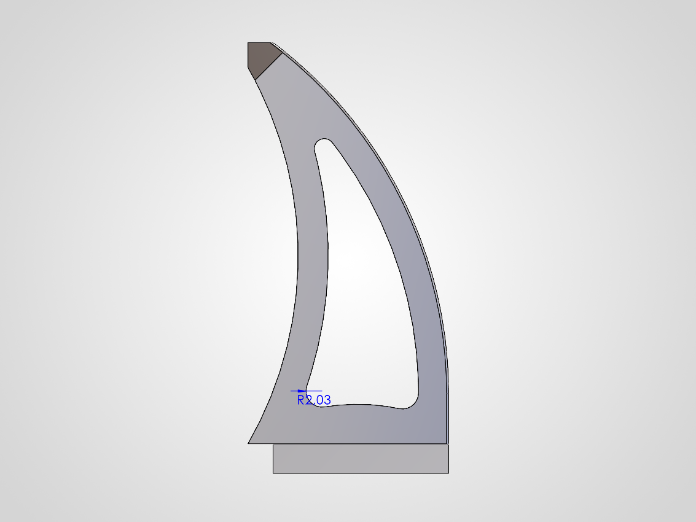
V2 Final Iteration
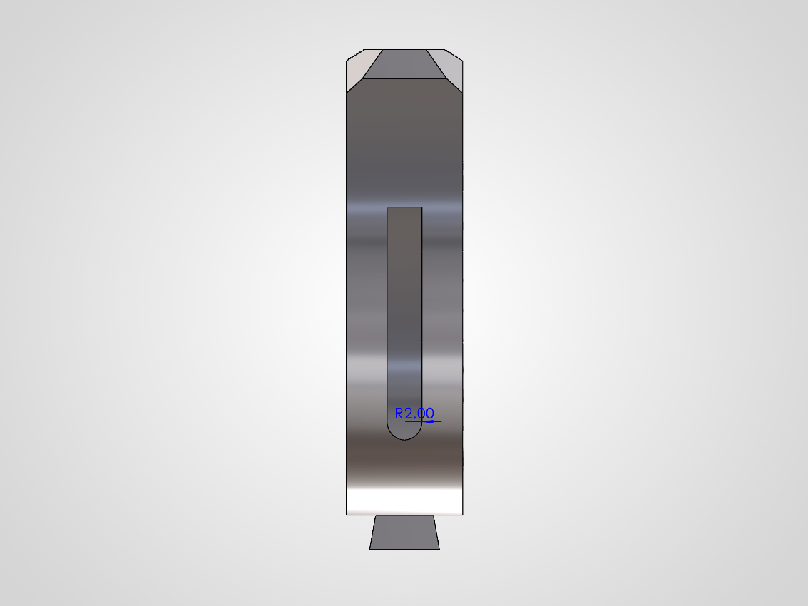
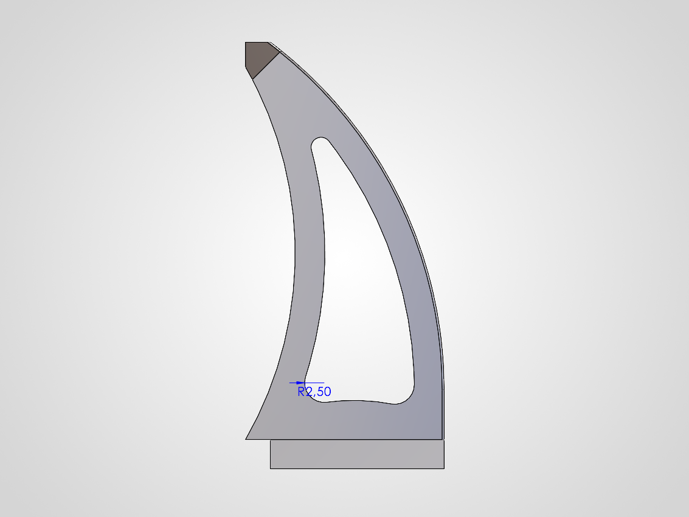
The redesigned geometry produced a measurable improvement under the same 300 N load case. Peak stress, equivalent elastic strain, and deformation all decreased in the final version.
Static Results Table
| Metric | V1 Baseline | V2 Final | Change |
|---|---|---|---|
| Equivalent Stress | 25.963 MPa | 22.448 MPa | -13.54% |
| Total Deformation | 0.008805 mm | 0.008524 mm | -3.19% |
| Directional Deformation (Y) | 0.006646 mm | 0.006353 mm | -4.41% |
| Equivalent Elastic Strain | 0.00038032 | 0.00032731 | -13.94% |
Mechanical engineer focused on mechanical design, CAE, and engineering analysis. This portfolio presents selected projects in FEA, simulation, optimization, and design iteration, with applications related to manufacturing, automation, and robotics.
Email: daldaltaylan@gmail.com
LinkedIn: Add your LinkedIn link
Resume: Add your resume PDF link